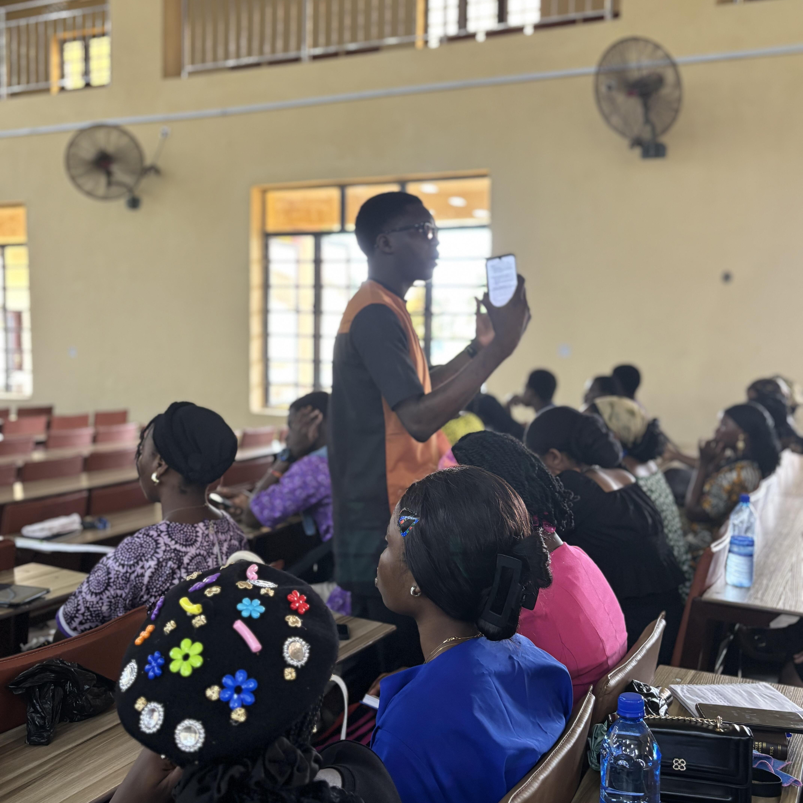

Our Identity
"...Sunday School Family!
Students and teachers of the Word!"
The Sunday School Family is a unit of the Bowen Baptist Student Fellowship, an arm of the Bowen
University Chapel here at Bowen University.
We are a community of believers dedicated to growing in our
faith and sharing the love of Christ with others.
A doctrinal powerhouse on campus, The Sunday School
Family is one of the four teaching units of the BBSF.
The Vision
"The Gospel prevails in our days!
Great is the peace of the Lord in our time..."
The truth
of God's word deeply rooted in the hearts and minds of people in Bowen University!

The Mission
...The Gospel to the ends of Bowen, the Gospel to the ends of the earth!...
To diligently
teaching the word in and out of season, rightly dividing the word of truth.
Event & Updates
View AllJune 2026
End of 2025/26 Session
The session has ended, but the memories stay with us forever💖
Sunday School Family...
May 2026
Sunday School Family Picnic
Even as teachers of the word, we're definitely fun people, and our picnic was one for the books...
March 2026
QTL Final Episode Is Out!
Join Ireoluwa and Tega as they wrap up the Questions That Linger series!

AdeogoOluwa Adedokun
The Superintendent is the head of the Sunday School Family, responsible for overseeing the operations and activities of the unit. He is a dedicated leader who ensures that the mission and vision of the Sunday School Family are upheld, guiding members in their spiritual growth and fostering a sense of community within the fellowship.
Meet the other executivesAccess Resources
Explore our collection of past Sunday School outlines.